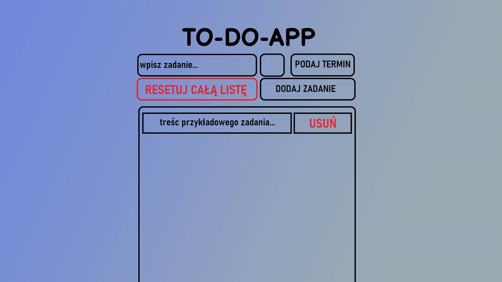

Projekt
Wczesny podgląd wyglądu aplikacji
wygląd aplikacji może ulegać zmianie wraz z nauką osoby tworzącej ją, jest to wczesny podgląd mający dać ogólne obeznanie co do jej działania.
- Celem pracy jest opracowanie interaktywnej aplikacji internetowej, która ma za zadanie wyręczyć użytkownika w obowiązkach zapamiętywania swoich codziennych(bądź nie) zadań. Aplikacja została zaprojektowana w formie witryny internetowej

- Pole - wpisz zadanie
- Pole te będzie odpowiedzialne za możliwość wpisania zadania z klawiatury przez użytkownika
- Pole bez tekstsu
- Pole te będzie dawało użytkownikowi możliwość ustawienia zadania jako priorytetowe, co spowoduje podświetlenie go na czerwono
- Pole - PODAJ TERMIN
- Pole te będzie dawało użytkownikowi możliwość podania daty do jakiej dane zadanie ma zostać wykonane
- Przycisk - RESETUJ CAŁĄ LISTĘ
- Przycisk ten powinien pojawić się po dodaniu przez użytkownika zadania, będzie ono odpowiedzialne za wyczyszczenie z zadań całej listy użytkownika
- Przycisk - DODAJ ZADANIE
- Przycisk ten umożliwi użytkownikowi dodanie do listy wcześniej wpisanego zadania.
- Przycisk - USUŃ
- Przycisk ten pojawić powinien się równocześnie z dodaniem przez użytkownika zadania, umożliwi on użytkownikowi na usunięcie danego zadania w liście.